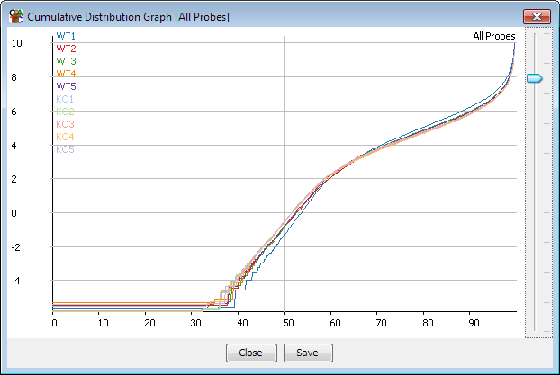

The cumulative distribution plot is a simple way to compare the distribution of probe values for the same probe list across several data stores, or for multiple probe lists across the same data store. In effect it shows a similar kind of information to the boxwhisker plot, but across the whole distribution, not just particular points (eg 25th, 50th and 75th percentiles).

The plot orders the probe values from lowest to highest, and then samples this set of values at common percentiles through the distribution. The x-axis therefore shows how far through the distribution we are looking, and the y-axis shows the value that the probe in that position has in that data store.
This plot is particularly useful when trying to assess the normalisation of multiple samples. Samples which are well normalised with each other will have very similar profiles on this plot, and any differences seen here indicate a systematic difference between the samples, which might have either a technical or a biological source.
The plot can be accessed by selecting "Plots > Cumulative Distribution Plot" You can choose to either plot all of the currently visible data stores for the currently selected probe list, or a selection of probe lists for the active data store
Once you have displayed the plot you can use the slider on the right hand side to stretch the y-axis scale so that you can more easily see the bulk of the data when you have a few outliers which might otherwise make the scale inappropriate.